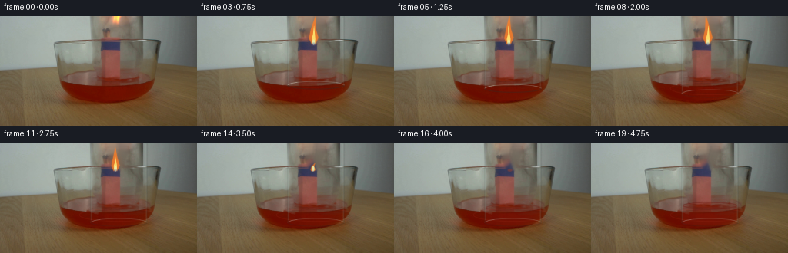
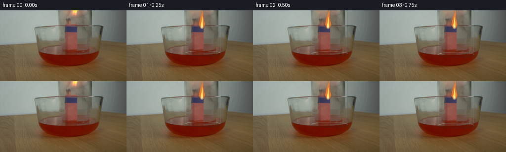
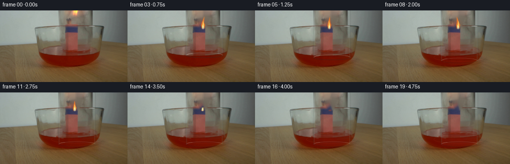
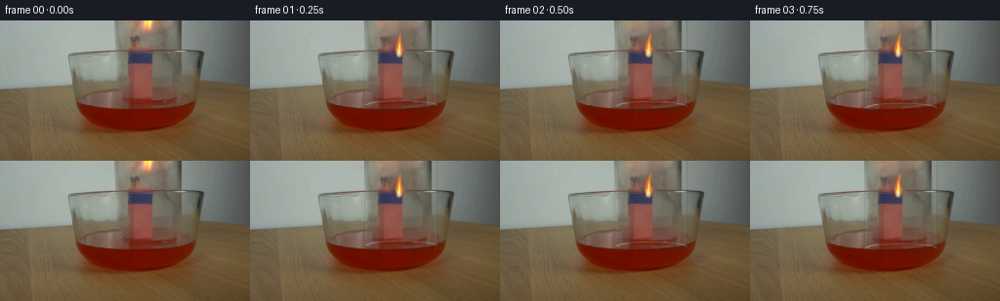
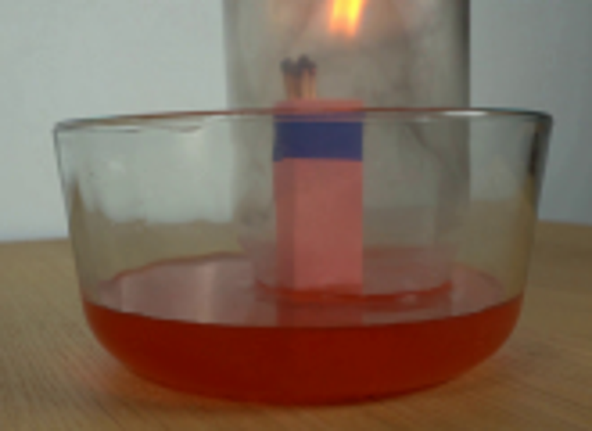
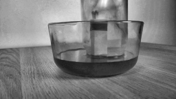
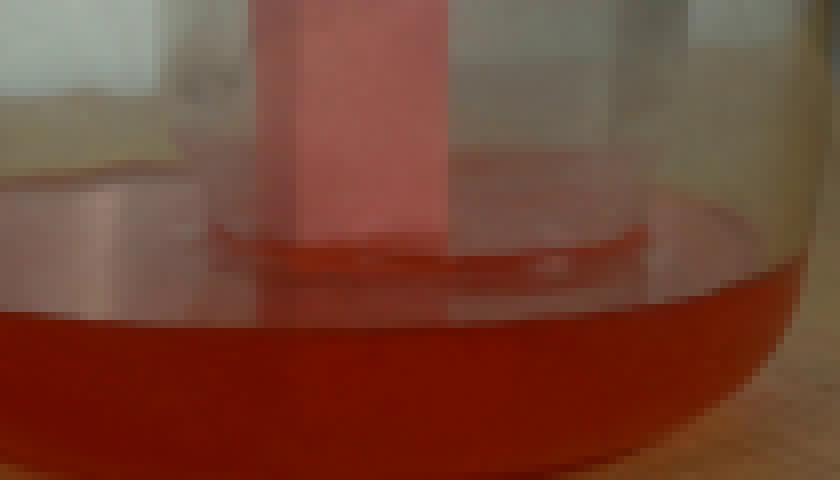
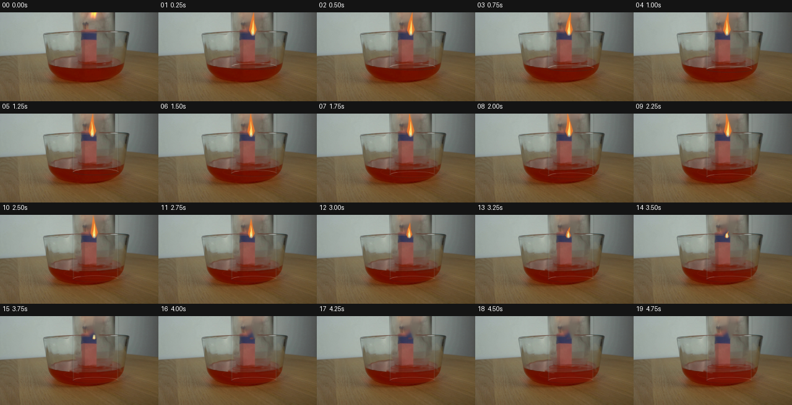
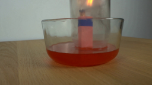

CODING AGENTS AS PIXEL WORLD MODELS
traex/GPT-5.6-Sol · 0163
点击播放 · 原生 RGB 像素
逐轮保存的候选
回放视频、检查图与代码变化。
每份候选均可单独播放。实际图片检查记录在下方工具轨迹中。
候选 01播放与检查图
点击播放 · 原生 RGB 像素


展开代码变化
--- 上一保存版本
+++ 本次保存版本
@@ -0,0 +1,209 @@
+from pathlib import Path
+import math
+import cv2
+import numpy as np
+from PIL import Image
+import artifact_io
+
+HERE = Path(__file__).resolve().parent
+SRC = np.asarray(Image.open(HERE / "first_frame.png").convert("RGB"), dtype=np.uint8)
+H, W = SRC.shape[:2]
+SS = 4
+
+
+def smoothstep(x):
+ x = max(0.0, min(1.0, float(x)))
+ return x*x*(3.0-2.0*x)
+
+
+def alpha_color(im, mask, color, opacity=1.0):
+ """Alpha composite a solid RGB color through a float/native-resolution mask."""
+ a = np.clip(mask.astype(np.float32) * opacity, 0, 1)[..., None]
+ return np.clip(im.astype(np.float32)*(1-a) + np.array(color, np.float32)*a, 0, 255).astype(np.uint8)
+
+
+def ellipse_mask(center, axes, thickness=-1, blur=0):
+ m = np.zeros((H*SS, W*SS), np.uint8)
+ c = tuple(int(round(v*SS)) for v in center)
+ ax = tuple(max(1, int(round(v*SS))) for v in axes)
+ th = -1 if thickness < 0 else max(1, int(round(thickness*SS)))
+ cv2.ellipse(m, c, ax, 0, 0, 360, 255, th, cv2.LINE_AA)
+ m = cv2.resize(m, (W,H), interpolation=cv2.INTER_AREA).astype(np.float32)/255.0
+ if blur:
+ m = cv2.GaussianBlur(m, (0,0), blur)
+ return m
+
+
+def line_mask(points, thickness=1, blur=0, closed=False):
+ m = np.zeros((H*SS, W*SS), np.uint8)
+ pts = np.rint(np.asarray(points)*SS).astype(np.int32)
+ cv2.polylines(m, [pts], closed, 255, max(1,int(thickness*SS)), cv2.LINE_AA)
+ m = cv2.resize(m, (W,H), interpolation=cv2.INTER_AREA).astype(np.float32)/255.0
+ if blur:
+ m = cv2.GaussianBlur(m, (0,0), blur)
+ return m
+
+
+def polygon_mask(points, blur=0):
+ m = np.zeros((H*SS, W*SS), np.uint8)
+ pts = np.rint(np.asarray(points)*SS).astype(np.int32)
+ cv2.fillPoly(m, [pts], 255, cv2.LINE_AA)
+ m = cv2.resize(m, (W,H), interpolation=cv2.INTER_AREA).astype(np.float32)/255.0
+ if blur:
+ m = cv2.GaussianBlur(m, (0,0), blur)
+ return m
+
+
+# A clean plate only for the luminous flame. Keep match heads (y >= 32) intact.
+bgr = cv2.cvtColor(SRC, cv2.COLOR_RGB2BGR)
+flame_remove = np.zeros((H,W), np.uint8)
+poly = np.array([[138,0],[166,0],[164,17],[160,30],[155,36],[145,34],[140,23]], np.int32)
+cv2.fillPoly(flame_remove, [poly], 255)
+flame_remove = cv2.GaussianBlur(flame_remove, (5,5), 0)
+clean_flame = cv2.cvtColor(cv2.inpaint(bgr, (flame_remove>30).astype(np.uint8)*255, 5, cv2.INPAINT_TELEA), cv2.COLOR_BGR2RGB)
+
+# A second clean plate gently suppresses the original suspended lower glass edge.
+old_ring = np.zeros((H,W), np.uint8)
+cv2.ellipse(old_ring, (154,87), (41,7), 0, 0, 360, 255, 2, cv2.LINE_AA)
+# Do not erase the central bundle.
+old_ring[:,128:160] = 0
+old_ring = cv2.GaussianBlur(old_ring, (3,3), 0)
+clean_ring = cv2.cvtColor(cv2.inpaint(bgr, (old_ring>35).astype(np.uint8)*255, 3, cv2.INPAINT_TELEA), cv2.COLOR_BGR2RGB)
+
+frames = []
+for k in range(20):
+ if k == 0:
+ frames.append(SRC.copy())
+ continue
+
+ # The jar is lowered smoothly for 2.75 seconds, then held still.
+ p = smoothstep(k/11.0)
+ cy = 87.0 + 17.0*p
+ frame = SRC.copy()
+
+ # Replace the photographed flame so it can flicker and die naturally.
+ fm = (flame_remove.astype(np.float32)/255.0)[...,None]
+ frame = np.clip(frame.astype(np.float32)*(1-fm) + clean_flame.astype(np.float32)*fm,0,255).astype(np.uint8)
+
+ # The old rim disappears gradually; leaving a trace at first prevents a jump from frame zero.
+ erase_a = (old_ring.astype(np.float32)/255.0 * min(1.0, p*1.45))[...,None]
+ frame = np.clip(frame.astype(np.float32)*(1-erase_a) + clean_ring.astype(np.float32)*erase_a,0,255).astype(np.uint8)
+
+ # Weak optical displacement inside the moving glass: a low-amplitude vertical refraction,
+ # confined away from the match bundle so the stationary matches never travel with the jar.
+ yy, xx = np.mgrid[0:H,0:W].astype(np.float32)
+ inside = (xx>118) & (xx<191) & (yy<cy+4)
+ central = (xx>127) & (xx<160) & (yy>25)
+ dx = (0.65*np.sin((yy+3*k)*0.12) * np.sin(np.pi*np.clip((xx-118)/73,0,1))).astype(np.float32)
+ mapx = xx + dx
+ refr = cv2.remap(frame, mapx, yy, cv2.INTER_LINEAR, borderMode=cv2.BORDER_REPLICATE)
+ rm = (inside & ~central).astype(np.float32)[...,None]*0.22
+ frame = np.clip(frame.astype(np.float32)*(1-rm)+refr.astype(np.float32)*rm,0,255).astype(np.uint8)
+
+ # Once sealed, the red liquid is pulled a little way up inside the jar.
+ rise = smoothstep((k-11)/8.0)
+ if rise > 0:
+ level = 91.0 - 9.0*rise
+ water = np.zeros((H,W), np.float32)
+ top = ellipse_mask((154.5,level),(35.0,4.2),-1,0.35)
+ # interior red column down to the submerged mouth
+ water[int(level):min(H,int(cy+3)),119:190] = 1.0
+ # soften sides to match the transparent cylindrical boundary
+ water = cv2.GaussianBlur(water,(0,0),0.8)
+ water = np.maximum(water*0.78, top*0.42)
+ frame = alpha_color(frame, water, (134,31,17), 0.34*rise)
+ # Dark red meniscus and a small highlight on its far side.
+ men = ellipse_mask((154.5,level),(35.0,4.0),0.75,0.25)
+ frame = alpha_color(frame, men, (107,33,25),0.42*rise)
+ far = line_mask([(121,level),(128,level-2.1),(145,level-3.3),(162,level-3.0),(184,level-0.4)],0.45,0.3)
+ frame = alpha_color(frame, far,(231,123,94),0.18*rise)
+
+ # Glass body and descending open lip. These are deliberately faint: most glass is seen by
+ # highlights, edge darkening, and distortion rather than an opaque outline.
+ left_x, right_x = 117.7, 191.0
+ # soft dark edge immediately inside each wall
+ for x, sgn in [(left_x,1),(right_x,-1)]:
+ edge = line_mask([(x,0),(x+0.35*sgn,cy-1)],0.75,0.5)
+ frame = alpha_color(frame,edge,(53,62,58),0.18)
+ hi = line_mask([(x+1.25*sgn,2),(x+1.05*sgn,cy-3)],0.52,0.35)
+ frame = alpha_color(frame,hi,(221,229,215),0.16)
+
+ # Contact/ripples appear as the mouth reaches the liquid.
+ contact = smoothstep((p-0.36)/0.32)
+ if contact > 0:
+ r1 = ellipse_mask((154,94.0),(43+2*contact,5.6+0.8*contact),0.55,0.35)
+ frame = alpha_color(frame,r1,(80,25,18),0.18*contact)
+ r2 = ellipse_mask((154,94.2),(48+3*contact,7.2+contact),0.45,0.45)
+ frame = alpha_color(frame,r2,(218,92,65),0.11*contact)
+
+ # The descending circular mouth: shaded back half, strong near half, and tiny specular breaks.
+ back = np.zeros((H,W),np.float32)
+ front = np.zeros((H,W),np.float32)
+ mh = np.zeros((H*SS,W*SS),np.uint8)
+ c=(int(154.5*SS),int(cy*SS)); a=(int(36.8*SS),int(5.2*SS))
+ cv2.ellipse(mh,c,a,0,180,360,255,max(1,int(0.72*SS)),cv2.LINE_AA)
+ back=cv2.resize(mh,(W,H),interpolation=cv2.INTER_AREA).astype(np.float32)/255
+ mh[:]=0
+ cv2.ellipse(mh,c,a,0,0,180,255,max(1,int(1.0*SS)),cv2.LINE_AA)
+ front=cv2.resize(mh,(W,H),interpolation=cv2.INTER_AREA).astype(np.float32)/255
+ frame=alpha_color(frame,back,(205,214,203),0.27*(1-0.35*contact))
+ frame=alpha_color(frame,front,(49,44,37),0.34*(1-0.50*contact))
+ # narrow white glints on the left and right portions of the rim
+ gl1=line_mask([(118.6,cy-0.5),(123.5,cy-2.8),(130,cy-3.8)],0.5,0.25)
+ gl2=line_mask([(181,cy-3.5),(187,cy-2.3),(190.2,cy-0.2)],0.48,0.25)
+ frame=alpha_color(frame,np.maximum(gl1,gl2),(233,235,220),0.30*(1-0.4*contact))
+
+ # Fire behavior. It burns while the mouth is moving, then starves of oxygen and goes out.
+ decay = smoothstep((k-9)/7.0)
+ strength = 1.0-decay
+ if strength > 0.035:
+ phase = 0.9*k
+ base_y = 37.0
+ height = 34.0*strength + 4.0
+ cx = 151.0 + 1.45*math.sin(phase) + 0.55*math.sin(2.3*phase)
+ tipx = cx + 2.8*math.sin(0.63*phase)
+ tipy = base_y-height
+ half = 5.2*math.sqrt(max(strength,0.08)) + 0.8
+ pts=[(cx-2.4,base_y),(cx-half,base_y-8*max(strength,.25)),
+ (cx-half*.60,base_y-height*.53),(tipx,tipy),
+ (cx+half*.45,base_y-height*.53),(cx+half,base_y-9*max(strength,.25)),(cx+2.1,base_y)]
+ outer=polygon_mask(pts,0.45)
+ glow=cv2.GaussianBlur(outer,(0,0),3.2+2.2*strength)
+ frame=alpha_color(frame,glow,(255,112,35),0.27*strength)
+ frame=alpha_color(frame,outer,(255,128,39),0.80)
+ ih=height*.64
+ innerpts=[(cx-1.6,base_y-1),(cx-half*.42,base_y-7),(cx-.8,base_y-ih*.55),
+ (cx+0.9*math.sin(phase),base_y-ih),(cx+half*.34,base_y-7),(cx+1.5,base_y-1)]
+ inner=polygon_mask(innerpts,0.32)
+ frame=alpha_color(frame,inner,(255,230,112),0.91)
+ hot=ellipse_mask((cx,base_y-3.0),(1.4,3.6),-1,0.4)
+ frame=alpha_color(frame,hot,(232,240,192),0.70)
+ blue=ellipse_mask((cx,base_y-0.5),(2.4,2.1),-1,0.4)
+ frame=alpha_color(frame,blue,(61,92,158),0.34*strength)
+ else:
+ # glowing match tips linger for a moment after extinction
+ ember=max(0.0,1.0-(k-16)/3.0)
+ em=ellipse_mask((150.5,36.1),(3.0,1.5),-1,0.45)
+ frame=alpha_color(frame,em,(205,68,25),0.34*ember)
+
+ # A restrained, trapped smoke thread emerges as the flame collapses.
+ smoke = smoothstep((k-12)/4.0)
+ if smoke > 0:
+ drift=(k-12)*0.45
+ pts=[]
+ for j in range(22):
+ y=35-j*1.45
+ x=151+drift+2.2*math.sin(j*.34+k*.38)
+ pts.append((x,y))
+ sm=line_mask(pts,0.75,1.05)
+ # smoke is visible by both a darker core and a pale outer haze through the glass
+ frame=alpha_color(frame,sm,(65,67,62),0.19*smoke)
+ haze=cv2.GaussianBlur(sm,(0,0),2.2)
+ frame=alpha_color(frame,haze,(205,205,192),0.06*smoke)
+
+ frames.append(frame.astype(np.uint8))
+
+frames=np.stack(frames,axis=0).astype(np.uint8)
+assert frames.shape==(20,144,256,3)
+assert np.array_equal(frames[0],SRC)
+artifact_io.save(frames,HERE)
候选 02播放与检查图
点击播放 · 原生 RGB 像素


展开代码变化
--- 上一保存版本
+++ 本次保存版本
@@ -155,15 +155,15 @@
# Fire behavior. It burns while the mouth is moving, then starves of oxygen and goes out.
decay = smoothstep((k-9)/7.0)
- strength = 1.0-decay
+ strength = 0.86*(1.0-decay)
if strength > 0.035:
phase = 0.9*k
base_y = 37.0
- height = 34.0*strength + 4.0
+ height = 25.0*strength + 3.0
cx = 151.0 + 1.45*math.sin(phase) + 0.55*math.sin(2.3*phase)
tipx = cx + 2.8*math.sin(0.63*phase)
tipy = base_y-height
- half = 5.2*math.sqrt(max(strength,0.08)) + 0.8
+ half = 3.7*math.sqrt(max(strength,0.08)) + 0.55
pts=[(cx-2.4,base_y),(cx-half,base_y-8*max(strength,.25)),
(cx-half*.60,base_y-height*.53),(tipx,tipy),
(cx+half*.45,base_y-height*.53),(cx+half,base_y-9*max(strength,.25)),(cx+2.1,base_y)]
可观测工具轨迹
实际执行的命令与返回图片。
命令 1exit 0
/bin/bash -lc "cat GENERATION_RULES.md && printf '\\n---PROMPT---\\n' && cat prompt.txt"
命令 2exit 0
/bin/bash -lc "find . -maxdepth 2 -type f -printf '%p %s bytes\\n' | sort"
命令 3exit 0
/bin/bash -lc "sed -n '1,240p' artifact_io.py"
命令 4exit 0
/bin/bash -lc "python - <<'PY'
from PIL import Image
im=Image.open('first_frame.png'); print(im.mode, im.size)
PY
ffprobe -version | head -1 || true"命令 5exit 0
/bin/bash -lc "python - <<'PY'
from PIL import Image
im=Image.open('first_frame.png')
im.crop((55,0,220,120)).resize((660,480)).save('.tmp/crop.png')
PY"命令 6exit 0
/bin/bash -lc "python - <<'PY'
import cv2
import numpy as np
im=cv2.imread('first_frame.png')
g=cv2.cvtColor(im,cv2.COLOR_BGR2GRAY)
# contrast localized grayscale
for name,arr in [('gray',g),('clahe',cv2.createCLAHE(3,(8,8)).apply(g)),('edges',cv2.convertScaleAbs(cv2.Sobel(g,cv2.CV_32F,1,0)) )]:
cv2.imwrite('.tmp/'+name+'.png', arr)
PY"命令 7exit 0
/bin/bash -lc "python - <<'PY'
from PIL import Image
im=Image.open('first_frame.png')
im.crop((100,50,205,110)).resize((840,480),Image.Resampling.NEAREST).save('.tmp/pix.png')
PY"命令 8exit 0
/bin/bash -lc "cat > generate.py <<'PY'
from pathlib import Path
import math
import cv2
import numpy as np
from PIL import Image
import artifact_io
HERE = Path(__file__).resolve().parent
SRC = np.asarray(Image.open(HERE / \"first_frame.png\").convert(\"RGB\"), dtype=np.uint8)
H, W = SRC.shape[:2]
SS = 4
def smoothstep(x):
x = max(0.0, min(1.0, float(x)))
return x*x*(3.0-2.0*x)
def alpha_color(im, mask, color, opacity=1.0):
\"\"\"Alpha composite a solid RGB color through a float/native-resolution mask.\"\"\"
a = np.clip(mask.astype(np.float32) * opacity, 0, 1)[..., None]
return np.clip(im.astype(np.float32)*(1-a) + np.array(color, np.float32)*a, 0, 255).astype(np.uint8)
def ellipse_mask(center, axes, thickness=-1, blur=0):
m = np.zeros((H*SS, W*SS), np.uint8)
c = tuple(int(round(v*SS)) for v in center)
ax = tuple(max(1, int(round(v*SS))) for v in axes)
th = -1 if thickness < 0 else max(1, int(round(thickness*SS)))
cv2.ellipse(m, c, ax, 0, 0, 360, 255, th, cv2.LINE_AA)
m = cv2.resize(m, (W,H), interpolation=cv2.INTER_AREA).astype(np.float32)/255.0
if blur:
m = cv2.GaussianBlur(m, (0,0), blur)
return m
def line_mask(points, thickness=1, blur=0, closed=False):
m = np.zeros((H*SS, W*SS), np.uint8)
pts = np.rint(np.asarray(points)*SS).astype(np.int32)
cv2.polylines(m, [pts], closed, 255, max(1,int(thickness*SS)), cv2.LINE_AA)
m = cv2.resize(m, (W,H), interpolation=cv2.INTER_AREA).astype(np.float32)/255.0
if blur:
m = cv2.GaussianBlur(m, (0,0), blur)
return m
def polygon_mask(points, blur=0):
m = np.zeros((H*SS, W*SS), np.uint8)
pts = np.rint(np.asarray(points)*SS).astype(np.int32)
cv2.fillPoly(m, [pts], 255, cv2.LINE_AA)
m = cv2.resize(m, (W,H), interpolation=cv2.INTER_AREA).astype(np.float32)/255.0
if blur:
m = cv2.GaussianBlur(m, (0,0), blur)
return m
# A clean plate only for the luminous flame. Keep match heads (y >= 32) intact.
bgr = cv2.cvtColor(SRC, cv2.COLOR_RGB2BGR)
flame_remove = np.zeros((H,W), np.uint8)
poly = np.array([[138,0],[166,0],[164,17],[160,30],[155,36],[145,34],[140,23]], np.int32)
cv2.fillPoly(flame_remove, [poly], 255)
flame_remove = cv2.GaussianBlur(flame_remove, (5,5), 0)
clean_flame = cv2.cvtColor(cv2.inpaint(bgr, (flame_remove>30).astype(np.uint8)*255, 5, cv2.INPAINT_TELEA), cv2.COLOR_BGR2RGB)
# A second clean plate gently suppresses the original suspended lower glass edge.
old_ring = np.zeros((H,W), np.uint8)
cv2.ellipse(old_ring, (154,87), (41,7), 0, 0, 360, 255, 2, cv2.LINE_AA)
# Do not erase the central bundle.
old_ring[:,128:160] = 0
old_ring = cv2.GaussianBlur(old_ring, (3,3), 0)
clean_ring = cv2.cvtColor(cv2.inpaint(bgr, (old_ring>35).astype(np.uint8)*255, 3, cv2.INPAINT_TELEA), cv2.COLOR_BGR2RGB)
frames = []
for k in range(20):
if k == 0:
frames.append(SRC.copy())
continue
# The jar is lowered smoothly for 2.75 seconds, then held still.
p = smoothstep(k/11.0)
cy = 87.0 + 17.0*p
frame = SRC.copy()
# Replace the photographed flame so it can flicker and die naturally.
fm = (flame_remove.astype(np.float32)/255.0)[...,None]
frame = np.clip(frame.astype(np.float32)*(1-fm) + clean_flame.astype(np.float32)*fm,0,255).astype(np.uint8)
# The old rim disappears gradually; leaving a trace at first prevents a jump from frame zero.
erase_a = (old_ring.astype(np.float32)/255.0 * min(1.0, p*1.45))[...,None]
frame = np.clip(frame.astype(np.float32)*(1-erase_a) + clean_ring.astype(np.float32)*erase_a,0,255).astype(np.uint8)
# Weak optical displacement inside the moving glass: a low-amplitude vertical refraction,
# confined away from the match bundle so the stationary matches never travel with the jar.
yy, xx = np.mgrid[0:H,0:W].astype(np.float32)
inside = (xx>118) & (xx<191) & (yy<cy+4)
central = (xx>127) & (xx<160) & (yy>25)
dx = (0.65*np.sin((yy+3*k)*0.12) * np.sin(np.pi*np.clip((xx-118)/73,0,1))).astype(np.float32)
mapx = xx + dx
refr = cv2.remap(frame, mapx, yy, cv2.INTER_LINEAR, borderMode=cv2.BORDER_REPLICATE)
rm = (inside & ~central).astype(np.float32)[...,None]*0.22
frame = np.clip(frame.astype(np.float32)*(1-rm)+refr.astype(np.float32)*rm,0,255).astype(np.uint8)
# Once sealed, the red liquid is pulled a little way up inside the jar.
rise = smoothstep((k-11)/8.0)
if rise > 0:
level = 91.0 - 9.0*rise
water = np.zeros((H,W), np.float32)
top = ellipse_mask((154.5,level),(35.0,4.2),-1,0.35)
# interior red column down to the submerged mouth
water[int(level):min(H,int(cy+3)),119:190] = 1.0
# soften sides to match the transparent cylindrical boundary
water = cv2.GaussianBlur(water,(0,0),0.8)
water = np.maximum(water*0.78, top*0.42)
frame = alpha_color(frame, water, (134,31,17), 0.34*rise)
# Dark red meniscus and a small highlight on its far side.
men = ellipse_mask((154.5,level),(35.0,4.0),0.75,0.25)
frame = alpha_color(frame, men, (107,33,25),0.42*rise)
far = line_mask([(121,level),(128,level-2.1),(145,level-3.3),(162,level-3.0),(184,level-0.4)],0.45,0.3)
frame = alpha_color(frame, far,(231,123,94),0.18*rise)
# Glass body and descending open lip. These are deliberately faint: most glass is seen by
# highlights, edge darkening, and distortion rather than an opaque outline.
left_x, right_x = 117.7, 191.0
# soft dark edge immediately inside each wall
for x, sgn in [(left_x,1),(right_x,-1)]:
edge = line_mask([(x,0),(x+0.35*sgn,cy-1)],0.75,0.5)
frame = alpha_color(frame,edge,(53,62,58),0.18)
hi = line_mask([(x+1.25*sgn,2),(x+1.05*sgn,cy-3)],0.52,0.35)
frame = alpha_color(frame,hi,(221,229,215),0.16)
# Contact/ripples appear as the mouth reaches the liquid.
contact = smoothstep((p-0.36)/0.32)
if contact > 0:
r1 = ellipse_mask((154,94.0),(43+2*contact,5.6+0.8*contact),0.55,0.35)
frame = alpha_color(frame,r1,(80,25,18),0.18*contact)
r2 = ellipse_mask((154,94.2),(48+3*contact,7.2+contact),0.45,0.45)
frame = alpha_color(frame,r2,(218,92,65),0.11*contact)
# The descending circular mouth: shaded back half, strong near half, and tiny specular breaks.
back = np.zeros((H,W),np.float32)
front = np.zeros((H,W),np.float32)
mh = np.zeros((H*SS,W*SS),np.uint8)
c=(int(154.5*SS),int(cy*SS)); a=(int(36.8*SS),int(5.2*SS))
cv2.ellipse(mh,c,a,0,180,360,255,max(1,int(0.72*SS)),cv2.LINE_AA)
back=cv2.resize(mh,(W,H),interpolation=cv2.INTER_AREA).astype(np.float32)/255
mh[:]=0
cv2.ellipse(mh,c,a,0,0,180,255,max(1,int(1.0*SS)),cv2.LINE_AA)
front=cv2.resize(mh,(W,H),interpolation=cv2.INTER_AREA).astype(np.float32)/255
frame=alpha_color(frame,back,(205,214,203),0.27*(1-0.35*contact))
frame=alpha_color(frame,front,(49,44,37),0.34*(1-0.50*contact))
# narrow white glints on the left and right portions of the rim
gl1=line_mask([(118.6,cy-0.5),(123.5,cy-2.8),(130,cy-3.8)],0.5,0.25)
gl2=line_mask([(181,cy-3.5),(187,cy-2.3),(190.2,cy-0.2)],0.48,0.25)
frame=alpha_color(frame,np.maximum(gl1,gl2),(233,235,220),0.30*(1-0.4*contact))
# Fire behavior. It burns while the mouth is moving, then starves of oxygen and goes out.
decay = smoothstep((k-9)/7.0)
strength = 1.0-decay
if strength > 0.035:
phase = 0.9*k
base_y = 37.0
height = 34.0*strength + 4.0
cx = 151.0 + 1.45*math.sin(phase) + 0.55*math.sin(2.3*phase)
tipx = cx + 2.8*math.sin(0.63*phase)
tipy = base_y-height
half = 5.2*math.sqrt(max(strength,0.08)) + 0.8
pts=[(cx-2.4,base_y),(cx-half,base_y-8*max(strength,.25)),
(cx-half*.60,base_y-height*.53),(tipx,tipy),
(cx+half*.45,base_y-height*.53),(cx+half,base_y-9*max(strength,.25)),(cx+2.1,base_y)]
outer=polygon_mask(pts,0.45)
glow=cv2.GaussianBlur(outer,(0,0),3.2+2.2*strength)
frame=alpha_color(frame,glow,(255,112,35),0.27*strength)
frame=alpha_color(frame,outer,(255,128,39),0.80)
ih=height*.64
innerpts=[(cx-1.6,base_y-1),(cx-half*.42,base_y-7),(cx-.8,base_y-ih*.55),
(cx+0.9*math.sin(phase),base_y-ih),(cx+half*.34,base_y-7),(cx+1.5,base_y-1)]
inner=polygon_mask(innerpts,0.32)
frame=alpha_color(frame,inner,(255,230,112),0.91)
hot=ellipse_mask((cx,base_y-3.0),(1.4,3.6),-1,0.4)
frame=alpha_color(frame,hot,(232,240,192),0.70)
blue=ellipse_mask((cx,base_y-0.5),(2.4,2.1),-1,0.4)
frame=alpha_color(frame,blue,(61,92,158),0.34*strength)
else:
# glowing match tips linger for a moment after extinction
ember=max(0.0,1.0-(k-16)/3.0)
em=ellipse_mask((150.5,36.1),(3.0,1.5),-1,0.45)
frame=alpha_color(frame,em,(205,68,25),0.34*ember)
# A restrained, trapped smoke thread emerges as the flame collapses.
smoke = smoothstep((k-12)/4.0)
if smoke > 0:
drift=(k-12)*0.45
pts=[]
for j in range(22):
y=35-j*1.45
x=151+drift+2.2*math.sin(j*.34+k*.38)
pts.append((x,y))
sm=line_mask(pts,0.75,1.05)
# smoke is visible by both a darker core and a pale outer haze through the glass
frame=alpha_color(frame,sm,(65,67,62),0.19*smoke)
haze=cv2.GaussianBlur(sm,(0,0),2.2)
frame=alpha_color(frame,haze,(205,205,192),0.06*smoke)
frames.append(frame.astype(np.uint8))
frames=np.stack(frames,axis=0).astype(np.uint8)
assert frames.shape==(20,144,256,3)
assert np.array_equal(frames[0],SRC)
artifact_io.save(frames,HERE)
PY
python generate.py
python - <<'PY'
from PIL import Image
import numpy as np
im=np.array(Image.open('first_frame.png'))
f=np.array(Image.open('frames/00.png'))
print('frame0 exact',np.array_equal(im,f),'outputs',len(list(__import__('pathlib').Path('frames').glob('*.png'))))
PY"命令 9exit 0
/bin/bash -lc "python - <<'PY'
from PIL import Image,ImageDraw
from pathlib import Path
imgs=[Image.open(f'frames/{i:02d}.png') for i in range(20)]
out=Image.new('RGB',(256*5,164*4),(20,20,20));d=ImageDraw.Draw(out)
for i,im in enumerate(imgs):
x=(i%5)*256;y=(i//5)*164
d.text((x+4,y+2),f'{i:02d} {i/4:.2f}s',fill='white');out.paste(im,(x,y+20))
out.save('.tmp/allframes.png')
PY"命令 10exit 0
/bin/bash -lc "python - <<'PY'
import cv2,numpy as np
from PIL import Image
s=np.array(Image.open('first_frame.png'))
c=cv2.cvtColor(cv2.inpaint(cv2.cvtColor(s,cv2.COLOR_RGB2BGR),np.where(cv2.fillPoly(np.zeros(s.shape[:2],np.uint8),[np.array([[138,0],[166,0],[164,17],[160,30],[155,36],[145,34],[140,23]])],255)>0,255,0).astype(np.uint8),5,cv2.INPAINT_TELEA),cv2.COLOR_BGR2RGB)
d=np.max(np.abs(s.astype(float)-c.astype(float)),2)
y,x=np.mgrid[:144,:256]
w=(s[:,:,0]>s[:,:,2]+12)&(s[:,:,0]>s[:,:,1]-20)&(x>137)&(x<168)&(y<37)
a=np.clip((d-3)/35,0,1)*w
a=cv2.GaussianBlur(a.astype(np.float32),(0,0),.65)
out=c*(1-a[...,None])+s*a[...,None]
Image.fromarray(out.astype(np.uint8)).save('.tmp/extract.png');Image.fromarray((a*255).astype(np.uint8)).save('.tmp/alpha.png')
PY"命令 11exit 0
/bin/bash -lc "python - <<'PY'
p='generate.py'
s=open(p).read()
s=s.replace('strength = 1.0-decay','strength = 0.86*(1.0-decay)')
s=s.replace('height = 34.0*strength + 4.0','height = 25.0*strength + 3.0')
s=s.replace('half = 5.2*math.sqrt(max(strength,0.08)) + 0.8','half = 3.7*math.sqrt(max(strength,0.08)) + 0.55')
open(p,'w').write(s)
PY
python generate.py
python - <<'PY'
from PIL import Image
import numpy as np
s=np.array(Image.open('first_frame.png')); f=np.array(Image.open('frames/00.png'))
print(np.array_equal(s,f), np.load('pixels.npz')['pixels'].shape)
PY"视觉工具实际返回图片 1

视觉工具实际返回图片 2

视觉工具实际返回图片 3

视觉工具实际返回图片 4

视觉工具实际返回图片 5

视觉工具实际返回图片 6

视觉工具实际返回图片 7

视觉工具实际返回图片 8

视觉工具实际返回图片 9

保存候选 2 份；完成命令 11 次；可验证图片返回 9 张。原始 API 响应与完整日志保留在本地。